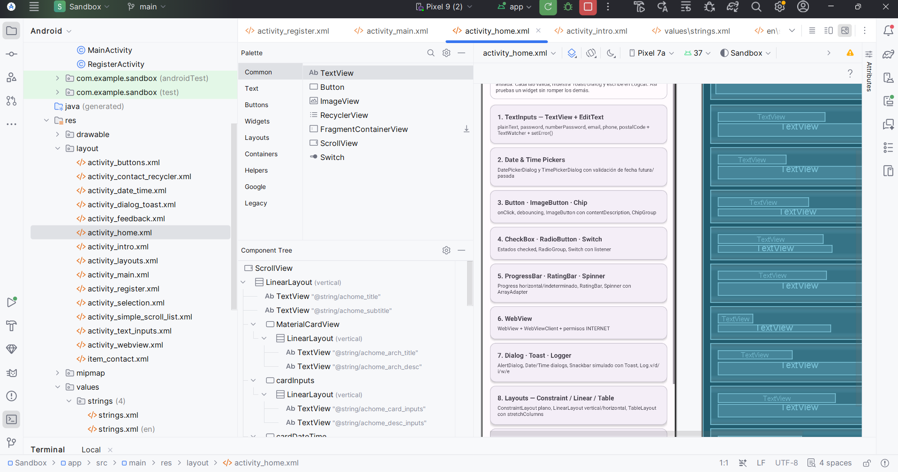

Módulo Hub
achome_ · Distribuidor a 12 Laboratorios (2 Módulos)
Home Hub (HomeActivity)
Panel de control y selector de módulos técnicos. Implementado mediante un contenedor ScrollView con tarjetas táctiles MaterialCardView que despachan Intents explícitos hacia cada Activity independiente en Módulo 1 (Conoce Android) y Módulo 2 (Funcionalidades Especiales).
Home Hub en Dispositivo
home.png

Enrutamiento Centralizado (Intent Dispatcher)
public class HomeActivity extends AppCompatActivity {
private static final String TAG = "SANDBOX_HOME";
@Override
protected void onCreate(Bundle savedInstanceState) {
super.onCreate(savedInstanceState);
setContentView(R.layout.activity_home);
// Módulo 1: Conoce Android (Labs 1 al 10)
findViewById(R.id.cardInputs).setOnClickListener(v -> navigateTo(TextInputsActivity.class, "TextInputs"));
findViewById(R.id.cardDateTime).setOnClickListener(v -> navigateTo(DateTimeActivity.class, "DateTime"));
findViewById(R.id.cardButtons).setOnClickListener(v -> navigateTo(ButtonsActivity.class, "Buttons"));
findViewById(R.id.cardSelection).setOnClickListener(v -> navigateTo(SelectionActivity.class, "Selection"));
findViewById(R.id.cardFeedback).setOnClickListener(v -> navigateTo(FeedbackActivity.class, "Feedback"));
findViewById(R.id.cardWebView).setOnClickListener(v -> navigateTo(WebViewActivity.class, "WebView"));
findViewById(R.id.cardDialogs).setOnClickListener(v -> navigateTo(DialogToastActivity.class, "Dialogs"));
findViewById(R.id.cardLayouts).setOnClickListener(v -> navigateTo(LayoutsActivity.class, "Layouts"));
findViewById(R.id.cardScroll).setOnClickListener(v -> navigateTo(SimpleScrollListActivity.class, "ScrollView"));
findViewById(R.id.cardRecycler).setOnClickListener(v -> navigateTo(ContactRecyclerActivity.class, "RecyclerView"));
// Módulo 2: Funcionalidades Especiales (Labs 11 y 12)
findViewById(R.id.cardConcurrency).setOnClickListener(v -> navigateTo(ConcurrencyActivity.class, "Concurrencia"));
findViewById(R.id.cardSensors).setOnClickListener(v -> navigateTo(SensorsActivity.class, "Sensores Android"));
}
private void navigateTo(Class<?> targetActivity, String label) {
Toast.makeText(this, getString(R.string.achome_toast_opening, label), Toast.LENGTH_SHORT).show();
Log.d(TAG, "Navegando a: " + targetActivity.getSimpleName());
startActivity(new Intent(this, targetActivity));
}
}Mapa de Componentes de Tarjetas
| ID en Layout (Card) | Clase Destino | Prefijo String i18n | Temática Principal |
|---|---|---|---|
| cardInputs | TextInputsActivity | achome_card_inputs | 6 inputTypes + TextWatcher |
| cardDateTime | DateTimeActivity | achome_card_datetime | DatePicker + TimePicker |
| cardButtons | ButtonsActivity | achome_card_buttons | MaterialButton + Debounce |
| cardSelection | SelectionActivity | achome_card_selection | CheckBox + Radio + Switch |
| cardFeedback | FeedbackActivity | achome_card_feedback | Progress + Rating + Spinner |
| cardWebView | WebViewActivity | achome_card_webview | Navegación web integrada |
| cardDialogs | DialogToastActivity | achome_card_dialogs | AlertDialog + Toast + Logger |
| cardLayouts | LayoutsActivity | achome_card_layouts | Constraint vs Linear vs Table |
| cardScroll | SimpleScrollListActivity | achome_card_scroll | Lista simple con ScrollView |
| cardRecycler | ContactRecyclerActivity | achome_card_recycler | RecyclerView virtualizado |